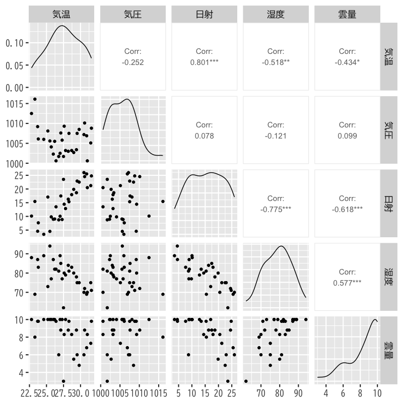
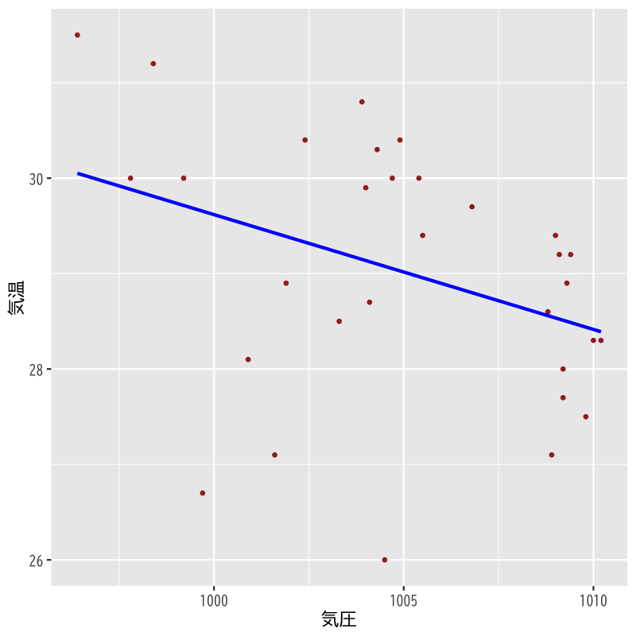
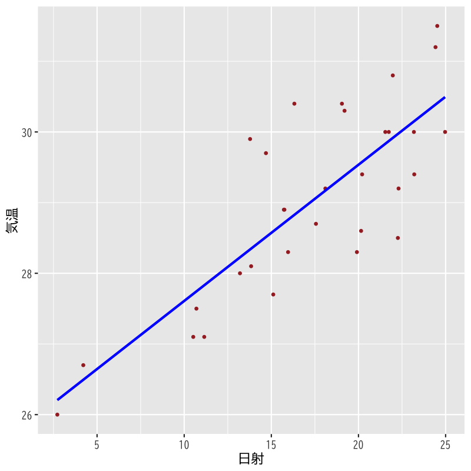
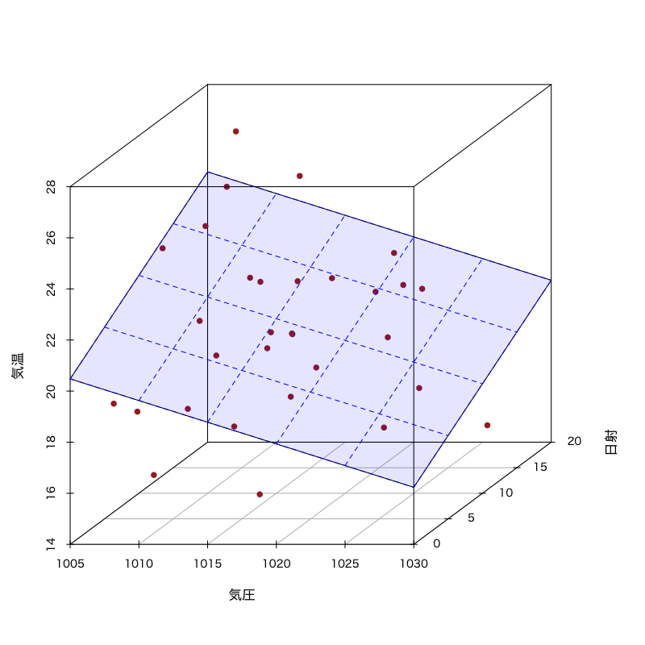
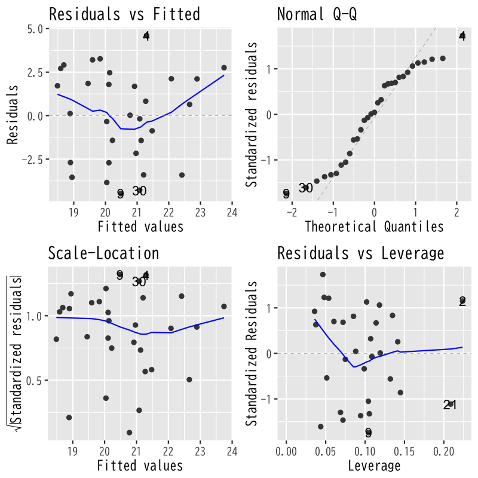
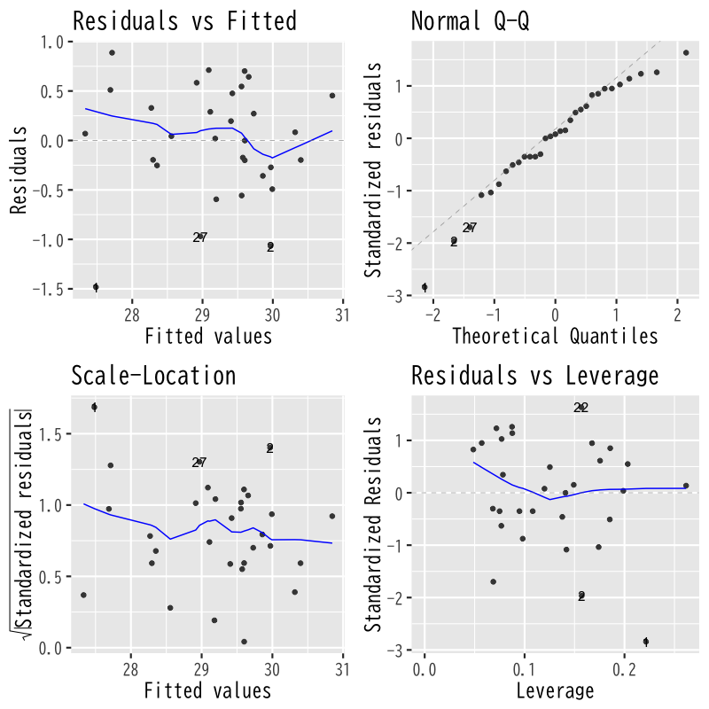
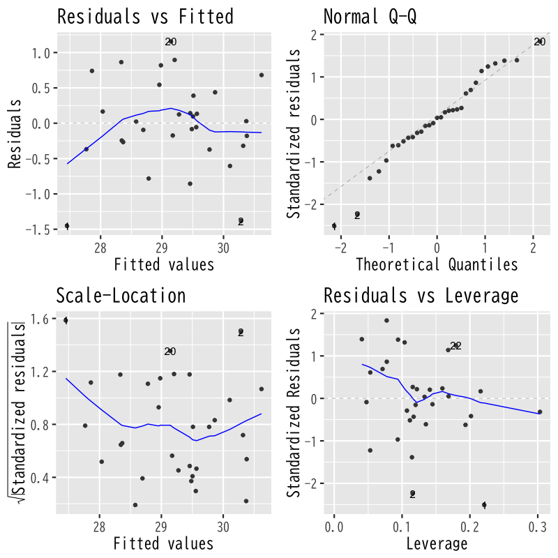

回帰分析
モデルの評価
(Press ? for help, n and p for next and previous slide)
講義の内容
- 第1回 : 回帰モデルの考え方と推定
- 第2回 : モデルの評価
- 第3回 : モデルによる予測と発展的なモデル
回帰分析の復習
線形回帰モデル
- 目的変数 を 説明変数 で説明する関係式を構成
- 説明変数 : \(x_{1},\dotsc,x_{p}\) (p次元)
- 目的変数 : \(y\) (1次元)
回帰係数 \(\beta_{0},\beta_{1},\dotsc,\beta_{p}\) を用いた一次式
\begin{equation} y=\beta_{0}+\beta_{1}x_{1}+\dotsb+\beta_{p}x_{p} \end{equation}誤差項 を含む確率モデルで観測データを表現
\begin{equation} y_i=\beta_{0}+\beta_{1} x_{i1}+\cdots+\beta_{p}x_{ip}+\epsilon_i \quad (i=1,\dotsc,n) \end{equation}
簡潔な表現のための行列
デザイン行列 (説明変数)
\begin{equation} X= \begin{pmatrix} 1 & x_{11} & x_{12} & \cdots & x_{1p} \\ 1 & x_{21} & x_{22} & \cdots & x_{2p} \\ \vdots & \vdots & \vdots & & \vdots \\ 1 & x_{n1} & x_{n2} & \cdots & x_{np} \end{pmatrix} \end{equation}
簡潔な表現のためのベクトル
ベクトル (目的変数・誤差・回帰係数)
\begin{equation} \boldsymbol{y}= \begin{pmatrix} y_{1} \\ y_2 \\ \vdots \\ y_n \end{pmatrix},\quad \boldsymbol{\epsilon}= \begin{pmatrix} \epsilon_{1} \\ \epsilon_2 \\ \vdots \\ \epsilon_n \end{pmatrix},\quad \boldsymbol{\beta}= \begin{pmatrix} \beta_{0} \\ \beta_{1} \\ \vdots \\ \beta_{p} \end{pmatrix} \end{equation}
問題の記述
確率モデル
\begin{equation} \boldsymbol{y} =X\boldsymbol{\beta}+\boldsymbol{\epsilon}, \quad\boldsymbol{\epsilon}\sim\text{確率分布} \end{equation}回帰式の推定 : 残差平方和 の最小化
\begin{equation} S(\boldsymbol{\beta}) =(\boldsymbol{y}-X\boldsymbol{\beta})^{\mathsf{T}} (\boldsymbol{y}-X\boldsymbol{\beta}) \end{equation}
解の表現
解の条件 : 正規方程式
\begin{equation} X^{\mathsf{T}}X\boldsymbol{\beta} =X^{\mathsf{T}}\boldsymbol{y} \end{equation}解の一意性 : Gram 行列 \(X^{\mathsf{T}}X\) が正則
\begin{equation} \boldsymbol{\hat{\beta}} = (X^{\mathsf{T}}X)^{-1} X^{\mathsf{T}}\boldsymbol{y} \end{equation}
最小二乗推定量の性質
- あてはめ値 \(\boldsymbol{\hat{y}}=X\boldsymbol{\hat{\beta}}\) は \(X\) の列ベクトルの線形結合
残差 \(\boldsymbol{\hat{\epsilon}}=\boldsymbol{y}-\boldsymbol{\hat{y}}\) はあてはめ値 \(\boldsymbol{\hat{y}}\) と直交
\begin{equation} \boldsymbol{\hat{\epsilon}}^{\mathsf{T}}\boldsymbol{\hat{y}} =0 \end{equation}回帰式は説明変数と目的変数の 標本平均 を通過
\begin{equation} \bar{y} = (1,\bar{\boldsymbol{x}}^{\mathsf{T}})\boldsymbol{\hat{\beta}}, \quad \bar{\boldsymbol{x}} =\frac{1}{n}\sum_{i=1}^n\boldsymbol{x}_i, \quad \bar{y} =\frac{1}{n}\sum_{i=1}^ny_i, \end{equation}
寄与率
決定係数 (R-squared)
\begin{equation} R^2 = 1-\frac{\sum_{i=1}^n\hat{\epsilon}_i^2}{\sum_{i=1}^n(y_i-\bar{y})^2} \end{equation}自由度調整済み決定係数 (adjusted R-squared)
\begin{equation} \bar{R}^2 = 1-\frac{\frac{1}{n{-}p{-}1}\sum_{i=1}^n\hat{\epsilon}_i^2} {\frac{1}{n{-}1}\sum_{i=1}^n(y_i-\bar{y})^2} \end{equation}- 不偏分散で補正
解析の事例
気温に影響を与える要因の分析
データの概要
日付 気温 降雨 日射 降雪 風向 風速 気圧 湿度 雲量
- 気温を説明する5種類の線形回帰モデルを検討
- モデル1 : 気温 = F(気圧)
- モデル2 : 気温 = F(日射)
- モデル3 : 気温 = F(気圧, 日射)
- モデル4 : 気温 = F(気圧, 日射, 湿度)
- モデル5 : 気温 = F(気圧, 日射, 雲量)
分析の視覚化
関連するデータの散布図

Figure 1: 散布図
モデル1の推定結果

Figure 2: モデル1
モデル2の推定結果

Figure 3: モデル2
モデル3の推定結果

Figure 4: モデル3
観測値とあてはめ値の比較

Figure 5: モデルの比較
モデルの比較
決定係数(\(R^{2}\), Adjusted \(R^{2}\))
係数 標準誤差 係数 標準誤差 係数 標準誤差 係数 標準誤差 係数 標準誤差 Abbreviations: CI = Confidence Interval, SE = Standard Error
あてはめ値の性質
あてはめ値
さまざまな表現
\begin{align} \boldsymbol{\hat{y}} &=X\boldsymbol{\hat{\beta}}\\ &\qquad(\boldsymbol{\hat{\beta}}=(X^{\mathsf{T}}X)^{-1}X^{\mathsf{T}}\boldsymbol{y}を代入)\\ &=X(X^{\mathsf{T}}X)^{-1}X^{\mathsf{T}}\boldsymbol{y} && (A) \\ &\qquad(\boldsymbol{y}=X\boldsymbol{\beta}+\boldsymbol{\epsilon}を代入)\\ &=X(X^{\mathsf{T}}X)^{-1}X^{\mathsf{T}}X\boldsymbol{\beta} +X(X^{\mathsf{T}}X)^{-1}X^{\mathsf{T}}\boldsymbol{\epsilon}\\ &=X\boldsymbol{\beta} +X(X^{\mathsf{T}}X)^{-1}X^{\mathsf{T}}\boldsymbol{\epsilon} && (B) \\ \end{align}- (A) あてはめ値は 観測値の重み付けの和 で表される
- (B) あてはめ値と観測値は 誤差項 の寄与のみ異なる
あてはめ値と誤差
残差と誤差の関係
\begin{align} \boldsymbol{\hat{\epsilon}} &=\boldsymbol{y}-\boldsymbol{\hat{y}}\\ &=\boldsymbol{\epsilon} -X(X^{\mathsf{T}}X)^{-1}X^{\mathsf{T}} \boldsymbol{\epsilon}\\ &=\bigl(I -X(X^{\mathsf{T}}X)^{-1}X^{\mathsf{T}} \bigr) \boldsymbol{\epsilon} && (C) \\ \end{align}- (C) 残差は 誤差の重み付けの和 で表される
ハット行列
定義
\begin{equation} H= X(X^{\mathsf{T}}X)^{-1}X^{\mathsf{T}} \end{equation}ハット行列 \(H\) による表現
\begin{align} \boldsymbol{\hat{y}} &=H\boldsymbol{y}\\ \boldsymbol{\hat{\epsilon}} &=(I-H)\boldsymbol{\epsilon} \end{align}- あてはめ値や残差は \(H\) を用いて簡潔に表現される
ハット行列の性質
- 観測データ(デザイン行列)のみで計算される
- 観測データと説明変数の関係を表す
対角成分 (テコ比; leverage) は観測データが自身の予測に及ぼす影響の度合を表す
\begin{equation} \hat{y}_{j} = (H)_{jj}y_{j} + \text{(それ以外のデータの寄与)} \end{equation}- \((A)_{ij}\) は行列 \(A\) の \((i,j)\) 成分
- テコ比が小さい : 他のデータでも予測が可能
- テコ比が大きい : 他のデータでは予測が困難
演習
問題
- ハット行列 \(H\) について以下を示しなさい
- \(H\) は対称行列であること
\(H\) は羃等であること
\begin{equation} H^{2}=H,\quad (I-H)^{2}=I-H \end{equation}以下の等式が成り立つこと
\begin{equation} HX=X,\quad X^{\mathsf{T}}H=X^{\mathsf{T}} \end{equation}
ヒント
いずれも \(H\) の定義にもとづいて計算すればよい
\begin{align} H^{\mathsf{T}} &= (X(X^{\mathsf{T}}X)^{-1}X^{\mathsf{T}})^{\mathsf{T}}\\ H^{2} &= (X(X^{\mathsf{T}}X)^{-1}X^{\mathsf{T}}) (X(X^{\mathsf{T}}X)^{-1}X^{\mathsf{T}})\\ (I-H)^{2} &= I-2H+H^{2}\\ HX &= (X(X^{\mathsf{T}}X)^{-1}X^{\mathsf{T}})X\\ X^{\mathsf{T}}H &=(HX)^{\mathsf{T}} \end{align}
推定量の統計的性質
最小二乗推定量の性質
推定量と誤差の関係
\begin{align} \boldsymbol{\hat{\beta}} &=(X^{\mathsf{T}}X)^{-1}X^{\mathsf{T}}\boldsymbol{y}\\ &=(X^{\mathsf{T}}X)^{-1}X^{\mathsf{T}}(X\boldsymbol{\beta}+\boldsymbol{\epsilon}) \\ &=(X^{\mathsf{T}}X)^{-1}X^{\mathsf{T}}X\boldsymbol{\beta} +(X^{\mathsf{T}}X)^{-1}X^{\mathsf{T}}\boldsymbol{\epsilon}\\ &=\boldsymbol{\beta} +(X^{\mathsf{T}}X)^{-1}X^{\mathsf{T}}\boldsymbol{\epsilon} \end{align}正規分布の重要な性質 (再生性)
正規分布に従う独立な確率変数の和は正規分布に従う
推定量の分布
- 誤差の仮定 : 独立，平均0 分散 \(\sigma^{2}\) の 正規分布
推定量は以下の多変量正規分布に従う
\begin{align} \mathbb{E}[\boldsymbol{\hat{\beta}}] &=\boldsymbol{\beta}\\ \mathrm{Cov}(\boldsymbol{\hat{\beta}}) &=\sigma^{2}(X^{\mathsf{T}}X)^{-1} \end{align}\begin{equation} \boldsymbol{\hat{\beta}} \sim \mathcal{N}(\boldsymbol{\beta},\sigma^{2}(X^{\mathsf{T}}X)^{-1}) \end{equation}
演習
問題
- 誤差が独立で，平均0 分散 \(\sigma^{2}\) の正規分布に従うとき，
最小二乗推定量 \(\boldsymbol{\hat{\beta}}\) について以下を示しなさい
- 平均は \(\boldsymbol{\beta}\) (真の母数)となること
- 共分散行列は \(\sigma^{2}(X^{\mathsf{T}}X)^{-1}\) となること
解答例
定義にもとづいて計算する
\begin{align} \mathbb{E}[\boldsymbol{\hat{\beta}}] &= \mathbb{E}[\boldsymbol{\beta} +(X^{\mathsf{T}}X)^{-1}X^{\mathsf{T}}\boldsymbol{\epsilon}]\\ &= \boldsymbol{\beta} +(X^{\mathsf{T}}X)^{-1}X^{\mathsf{T}}\mathbb{E}[\boldsymbol{\epsilon}]\\ &= \boldsymbol{\beta} \end{align}
定義にもとづいて計算する
\begin{align} \mathrm{Cov}(\boldsymbol{\hat{\beta}}) &= \mathbb{E}[ (\boldsymbol{\hat{\beta}}-\boldsymbol{\beta}) (\boldsymbol{\hat{\beta}}-\boldsymbol{\beta})^{\mathsf{T}}]\\ &= \mathbb{E}[(X^{\mathsf{T}}X)^{-1}X^{\mathsf{T}}\boldsymbol{\epsilon} \boldsymbol{\epsilon}^{\mathsf{T}}X(X^{\mathsf{T}}X)^{-1}]\\ &= (X^{\mathsf{T}}X)^{-1}X^{\mathsf{T}} \mathbb{E}[\boldsymbol{\epsilon}\boldsymbol{\epsilon}^{\mathsf{T}}] X(X^{\mathsf{T}}X)^{-1}\\ &= (X^{\mathsf{T}}X)^{-1}X^{\mathsf{T}} (\sigma^{2}I) X(X^{\mathsf{T}}X)^{-1}\\ &= \sigma^{2} (X^{\mathsf{T}}X)^{-1} \end{align}
誤差の評価
寄与率 (再掲)
決定係数 (R-squared)
- 回帰式で説明できるばらつきの比率
\begin{equation} R^2 = 1-\frac{\sum_{i=1}^n\hat{\epsilon}_i^2}{\sum_{i=1}^n(y_i-\bar{y})^2} \end{equation}自由度調整済み決定係数 (adjusted R-squared)
- 決定係数を不偏分散で補正
\begin{equation} \bar{R}^2 = 1-\frac{\frac{1}{n{-}p{-}1}\sum_{i=1}^n\hat{\epsilon}_i^2} {\frac{1}{n{-}1}\sum_{i=1}^n(y_i-\bar{y})^2} \end{equation}
各係数の推定量の分布
- 推定された回帰係数の精度を評価
- 誤差 \(\epsilon\) の分布は平均0 分散 \(\sigma^2\) の正規分布
\(\boldsymbol{\hat{\beta}}\) の分布 : \(p{+}1\) 変量正規分布
\begin{equation} \boldsymbol{\hat{\beta}} \sim \mathcal{N}(\boldsymbol{\beta},\sigma^{2}(X^{\mathsf{T}}X)^{-1}) \end{equation}\(\hat{\beta}_j\) の分布 : 1変量正規分布
\begin{equation} \hat{\beta}_{j} \sim \mathcal{N}(\beta_{j},\sigma^{2}((X^{\mathsf{T}}X)^{-1})_{jj}) =\mathcal{N}(\beta_{j},\sigma^{2}\zeta_{j}^{2}) \end{equation}- \((A)_{jj}\) は行列 \(A\) の \((j,j)\) (対角)成分
標準誤差
標準誤差 (standard error)
- \(\hat{\beta}_j\) の標準偏差の推定量
\begin{equation} \mathrm{s{.}e{.}}(\hat{\beta}_{j}) = \hat{\sigma}\zeta_j = \sqrt{\frac{1}{n{-}p{-}1}\sum_{i=1}^n\hat{\epsilon}_i^2} \cdot \sqrt{((X^{\mathsf{T}}X)^{-1})_{jj}} \end{equation}- 未知母数 \(\sigma^{2}\) は不偏分散 \(\hat{\sigma}^{2}\) で推定
- \(\hat{\beta}_j\) の精度の評価指標
演習
問題
- 以下の問に答えなさい
不偏分散 \(\hat{\sigma}^{2}\) が 母数 \(\sigma^{2}\) の不偏な推定量となることを示せ
以下が成り立つことを示せばよい
\begin{equation} \mathbb{E}\left[\sum_{i=1}^{n}\hat{\epsilon}_{i}^{2}\right] =(n{-}p{-}1)\sigma^{2} \end{equation}- 回帰のばらつき \(S_{r}\) をハット行列 \(H\) と 目的変数 \(\boldsymbol{y}\) で表せ
解答例
ハット行列 \(H\) を用いた表現を利用する
\begin{align} \boldsymbol{\hat{\epsilon}} &= (I_{n}-H)\boldsymbol{\epsilon}\\ \mathbb{E}\left[\sum_{i=1}^{n}\hat{\epsilon}_{i}^{2}\right] &= \mathbb{E}[\boldsymbol{\hat{\epsilon}}^{\mathsf{T}}\boldsymbol{\hat{\epsilon}}]\\ &= \mathbb{E}[\mathrm{tr} (\boldsymbol{\hat{\epsilon}} \boldsymbol{\hat{\epsilon}}^{\mathsf{T}})]\\ &= \mathbb{E}[\mathrm{tr} (I_{n}-H)\boldsymbol{\epsilon} \boldsymbol{\epsilon}^{\mathsf{T}}(I_{n}-H)]\\ &= \mathrm{tr}(I_{n}-H) \mathbb{E}[\boldsymbol{\epsilon}\boldsymbol{\epsilon}^{\mathsf{T}}] (I_{n}-H)\\ &= \mathrm{tr} (I_{n}-H)(\sigma^{2}I_{n})(I_{n}-H)\\ &= \sigma^{2}\mathrm{tr}(I_{n}-H) \end{align}- \(I_{n}\) は \(n\times n\) 単位行列
さらに以下が成立する
\begin{align} \mathrm{tr} H &= \mathrm{tr} X(X^{\mathsf{T}}X)^{-1}X^{\mathsf{T}}\\ &= \mathrm{tr} (X^{\mathsf{T}}X)^{-1}X^{\mathsf{T}}X\\ &= \mathrm{tr} I_{p{+}1}\\ &=p+1 \end{align}- 行列のサイズに注意
\(H\) の性質より以下が成り立つ
\begin{align} H\boldsymbol{1} &=\boldsymbol{1}\\ \boldsymbol{\hat{y}} &= H\boldsymbol{y} \end{align}行列 \(M\) を以下で定める
\begin{equation} M = \frac{1}{n}\boldsymbol{1}\boldsymbol{1}^{\mathsf{T}} \end{equation}このとき以下が成り立つ
\begin{align} &M^{2} = M\\ &HM = MH = M \end{align}
行列 \(M\) を用いると目的変数の平均は以下で表される
\begin{equation} \boldsymbol{\bar{y}} = M\boldsymbol{y} \end{equation}\(S_{r}\) の定義から
\begin{align} S_{r} &= (\boldsymbol{\hat{y}}-\boldsymbol{\bar{y}})^{\mathsf{T}} (\boldsymbol{\hat{y}}-\boldsymbol{\bar{y}}) \\ &= ((H-M)\boldsymbol{y})^{\mathsf{T}} ((H-M)\boldsymbol{y}) \\ &= \boldsymbol{y}^{\mathsf{T}}(H-M)^{\mathsf{T}} (H-M)\boldsymbol{y} \\ &= \boldsymbol{y}^{\mathsf{T}} (H-M)\boldsymbol{y} \\ &= \mathrm{tr} (H-M)\boldsymbol{y}\boldsymbol{y}^{\mathsf{T}} \end{align}
後に \(\beta_{1}=\dotsb=\beta_{p}=0\) ならば
\begin{align} \mathbb{E}[\boldsymbol{y}\boldsymbol{y}^{\mathsf{T}}] &= \beta_{0}^{2} \boldsymbol{1}\boldsymbol{1}^{\mathsf{T}} + \mathbb{E}[\boldsymbol{\epsilon}\boldsymbol{\epsilon}^{\mathsf{T}}]\\ &= n \beta_{0}^{2} M + \sigma^{2}I_{n} \end{align}となることを利用して，モデルの評価のための統計量を導く
係数の評価
\(t\)統計量
回帰係数の分布 に関する定理
\(t\)統計量 (\(t\)-statistic)
\begin{equation} % \text{(t統計量)}\quad t = \frac{\hat{\beta}_j-\beta_j}{\mathrm{s{.}e{.}}(\hat{\beta}_{j})} = \frac{\hat{\beta}_j-\beta_j}{\hat{\sigma}\zeta_{j}} \end{equation}は自由度 \(n{-}p{-}1\) の \(t\)分布に従う
- 証明には以下の性質を用いる
- \(\hat{\sigma}{}^2\) と \(\boldsymbol{\hat{\beta}}\) は独立となる
- \((\hat{\beta}_j-\beta_j)/(\sigma\zeta_j)\) は標準正規分布に従う
- \((n{-}p{-}1)\hat{\sigma}^2/\sigma^2=S(\boldsymbol{\hat{\beta}})/\sigma^2\) は自由度 \(n{-}p{-}1\) の \(\chi^{2}\) 分布に従う
- 証明には以下の性質を用いる
\(t\)統計量による検定
- 回帰係数 \(\beta_j\) が回帰式に寄与するか否かを検定
- 帰無仮説 \(H_{0}\) : \(\beta_j=0\) (\(t\)統計量が計算できる)
- 対立仮説 \(H_{1}\) : \(\beta_j\neq0\)
\(p\)値 : 確率変数の絶対値が \(|t|\) を超える確率
- \(f(x)\) は自由度 \(n{-}p{-}1\) の \(t\)分布の確率密度関数
\begin{equation} \text{(\(p\)値)} = 2\int_{|t|}^\infty f(x)dx \quad\text{(両側検定)} \end{equation}帰無仮説 \(H_{0}\) が正しければ \(p\)値は小さくならない
モデルの評価
平方和の分解(再掲)
- いろいろなばらつき
- \(S_y=(\boldsymbol{y}-\bar{\boldsymbol{y}})^{\mathsf{T}} (\boldsymbol{y}-\bar{\boldsymbol{y}})\) : 目的変数のばらつき
- \(S_{\phantom{y}}=(\boldsymbol{y}-\boldsymbol{\hat{y}})^{\mathsf{T}} (\boldsymbol{y}-\boldsymbol{\hat{y}})\) : 残差のばらつき (\(\boldsymbol{\hat{\epsilon}}^{\mathsf{T}}\boldsymbol{\hat{\epsilon}}\))
- \(S_r=(\boldsymbol{\hat{y}}-\bar{\boldsymbol{y}})^{\mathsf{T}} (\boldsymbol{\hat{y}}-\bar{\boldsymbol{y}})\) : あてはめ値(回帰)のばらつき
3つのばらつき(平方和)の関係
\begin{equation} (\boldsymbol{y}-\bar{\boldsymbol{y}})^{\mathsf{T}} (\boldsymbol{y}-\bar{\boldsymbol{y}}) = (\boldsymbol{y}-\boldsymbol{\hat{y}})^{\mathsf{T}} (\boldsymbol{y}-\boldsymbol{\hat{y}})+ (\boldsymbol{\hat{y}}-\bar{\boldsymbol{y}})^{\mathsf{T}} (\boldsymbol{\hat{y}}-\bar{\boldsymbol{y}}) \end{equation}\begin{equation} S_y=S+S_r \end{equation}
\(F\)統計量
ばらつきの比 に関する定理
\(\beta_{1}=\dotsb=\beta_{p}=0\) ならば \(F\)統計量 (\(F\)-statistic)
\begin{equation} % \text{(F統計量)}\quad F= \frac{\frac{1}{p}S_{r}}{\frac{1}{n{-}p{-}1}S} % =\frac{\frac{1}{p}\sum_{i=1}^n(\hat{y}_i-\bar{y})^2} % {\frac{1}{n{-}p{-}1}\sum_{i=1}^n(y_i-\hat{y}_i)^2} =\frac{n{-}p{-}1}{p}\frac{R^2}{1-R^2} \end{equation}は自由度 \(p,n{-}p{-}1\) の \(F\)分布に従う
- 証明には以下の性質を用いる
- \(S_{r}\) と \(S\) は独立となる
- \(S_{r}/\sigma^2\) は自由度 \(p\) の \(\chi^{2}\) 分布に従う
- \(S/\sigma^2\) は自由度 \(n{-}p{-}1\) の \(\chi^{2}\) 分布に従う
- 証明には以下の性質を用いる
\(F\)統計量を用いた検定
- 説明変数のうち1つでも役に立つか否かを検定
- 帰無仮説 \(H_{0}\) : \(\beta_{1}=\dotsb=\beta_{p}=0\) (\(S_r\) が \(\chi^2\) 分布になる)
- 対立仮説 \(H_{1}\) : \(\exists j\;\beta_j\neq0\)
\(p\)値 : 確率変数の値が \(F\)を超える確率
- \(f(x)\) は自由度 \(p,n{-}p{-}1\) の \(F\)分布の確率密度関数
\begin{equation} \text{(\(p\)値)} = \int_{F}^\infty f(x)dx \quad\text{(片側検定)} \end{equation}帰無仮説 \(H_{0}\) が正しければ \(p\)値は小さくならない
解析の事例
気温に影響を与える要因の分析(再掲)
データの概要
日付 気温 降雨 日射 降雪 風向 風速 気圧 湿度 雲量
- 気温を説明する5種類の線形回帰モデルを検討
- モデル1 : 気温 = F(気圧)
- モデル2 : 気温 = F(日射)
- モデル3 : 気温 = F(気圧, 日射)
- モデル4 : 気温 = F(気圧, 日射, 湿度)
- モデル5 : 気温 = F(気圧, 日射, 雲量)
分析の視覚化(再掲)
- 観測値とあてはめ値の比較
Figure 6: モデルの比較
モデルの比較
\(t\)統計量・\(F\)統計量
係数 t統計量 p値 係数 t統計量 p値 係数 t統計量 p値 係数 t統計量 p値 係数 t統計量 p値 Abbreviation: CI = Confidence Interval
診断プロット

Figure 7: モデル3
診断プロット

Figure 8: モデル4
診断プロット

Figure 9: モデル5
次回の予定
- 第1回 : 回帰モデルの考え方と推定
- 第2回 : モデルの評価
- 第3回 : モデルによる予測と発展的なモデル